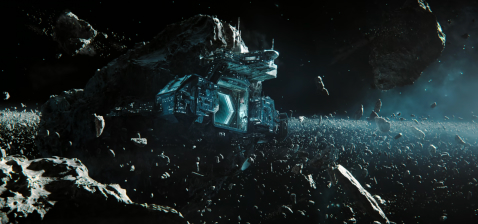

Optimized Viewing Experience on the Computer
Beyond the Aquila Rift



The crew of a spaceship named "The Blue Goose" is on the way back to Earth through the portal called Arkangel Dispatch.
Suzy, situated at the navigation console, plotted the course and prepared for departure. She even found a shortcut.
The Blue Goose is cleared for surge point insertion and it slowly enters the portal...
“System error” warning appeared in the ship, and the captain Thom woke up, he looks through the window and realize he is in a station he doesn't recognize.
A woman called Greta enters the ship and she seems know Thom before, she said Arkangel Dispatch had a glitch in their syntax launch patterns, and they are at Saumlaki Station in Schedar Sector.
Suzy wants to see the ship's logs; however, she starts to lose consciousness. Greta said the symptom is Surge tank sickness, and she put Suzy in her tank to rest.
Thom and Greta start to catch up and talk a lot.
The fire of passion burned between them.
Greta told him that they are actulally now farther away from the location than Schedar Sector.
Thom becomes anxious and upset, but Greta keeps calming and comforting Thom down.
Thom went back to Suzy and plans to tell her the truth, but Suzy who should familiar with Greta is now not recognize her.
Suzy attacked Greta and left wounds, and Greta sedated Suzy.
Thom found out that Greta's wounds have completely recovered without a mark and begins to suspect Greta. Greta admits that she lied to Thom and that Thom is actually still sleeping in his tank.
Thom is even more panicked and confused, desperate to get the truth out of Greta. Greta tries to convince Thom not to learn the truth and believes that Thom is not ready for it.
“All right, Thom. But understand this: I do care for you. I care for all the lost souls that end up here.”
Thom finally woke up in reality.
Thom saw the crumbling space station and the ship.
“Hello, Thom.”
“Hello, Thom.”
After Thom saw the real Greta and screamed. Thom, who has lost all his memories, returns to the illusion he was in after his first awakening on this station.
After Thom saw the real Greta and screamed. Thom, who has lost all his memories, returns to the illusion he was in after his first awakening on this station.
“...Schedar Sector? But...that's hundreds of light years off our course.”
“Yes, it is. But, hey, at least there's a friendly face here.”
“Yes, it is. But, hey, at least there's a friendly face here.”